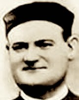

¿Quién fue?

Florentín Felipe Naya fue un hermano religioso de las Escuelas Pías. Dedicó gran parte de su vida a servir como cocinero y encargado del refectorio.
En este sitio presentamos su vida, su fe, su martirio y el legado que dejó.
Imagen: CatholicSaints.Info
Datos principales
- Nacimiento: 10 de octubre de 1856.
- Lugar: Alquézar, Huesca.
- Ingreso al noviciado: 1876.
- Fallecimiento: 9 de agosto de 1936.
- Beatificación: 1 de octubre de 1995.